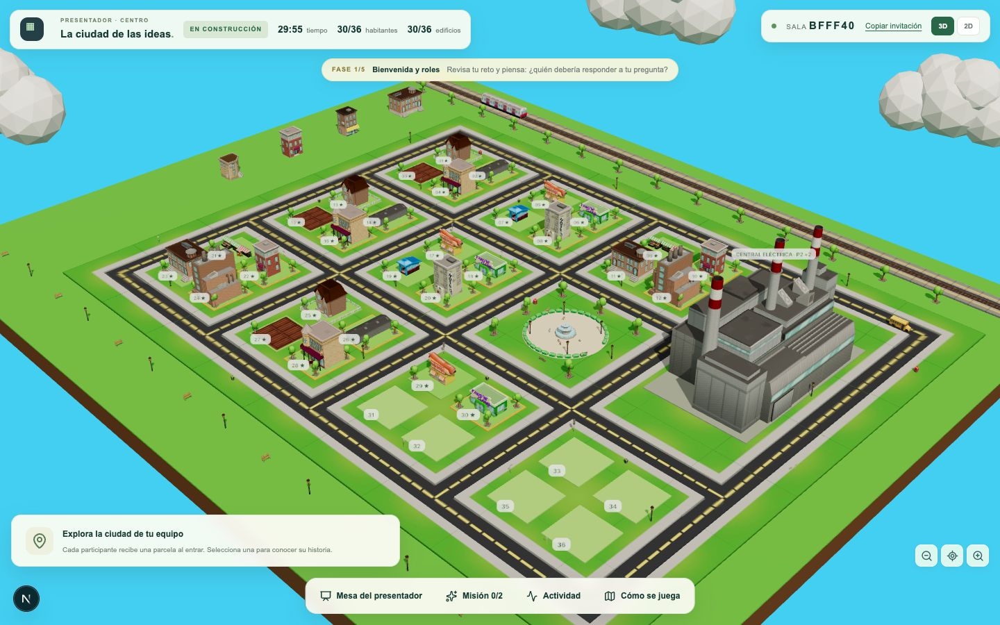
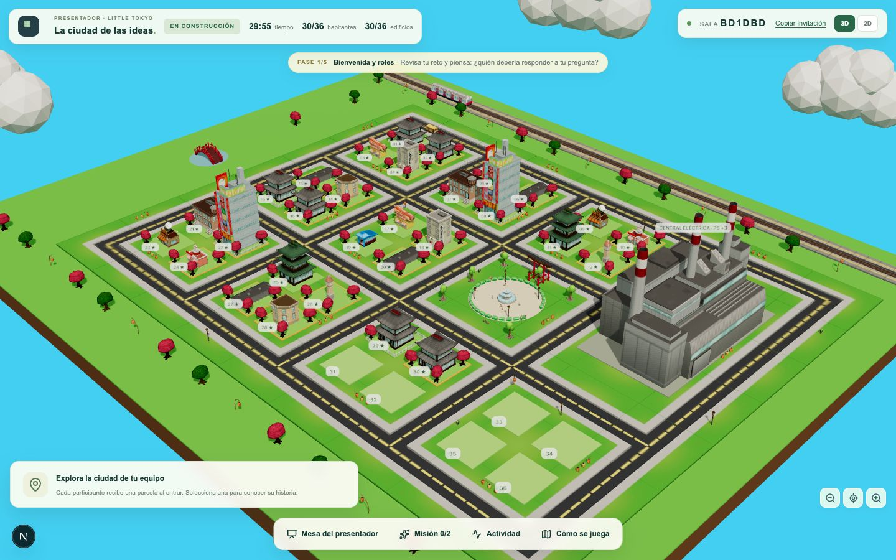
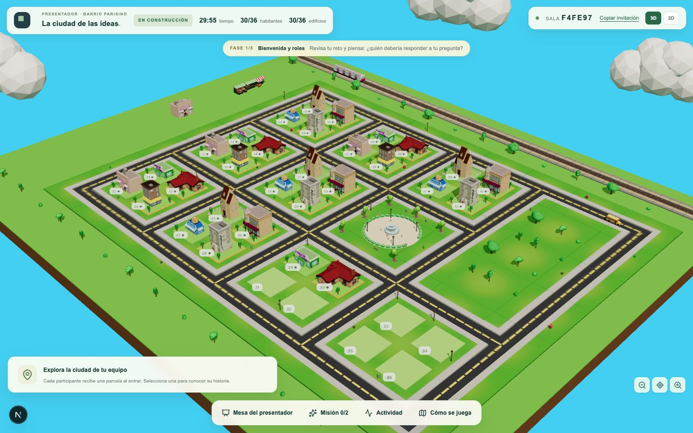
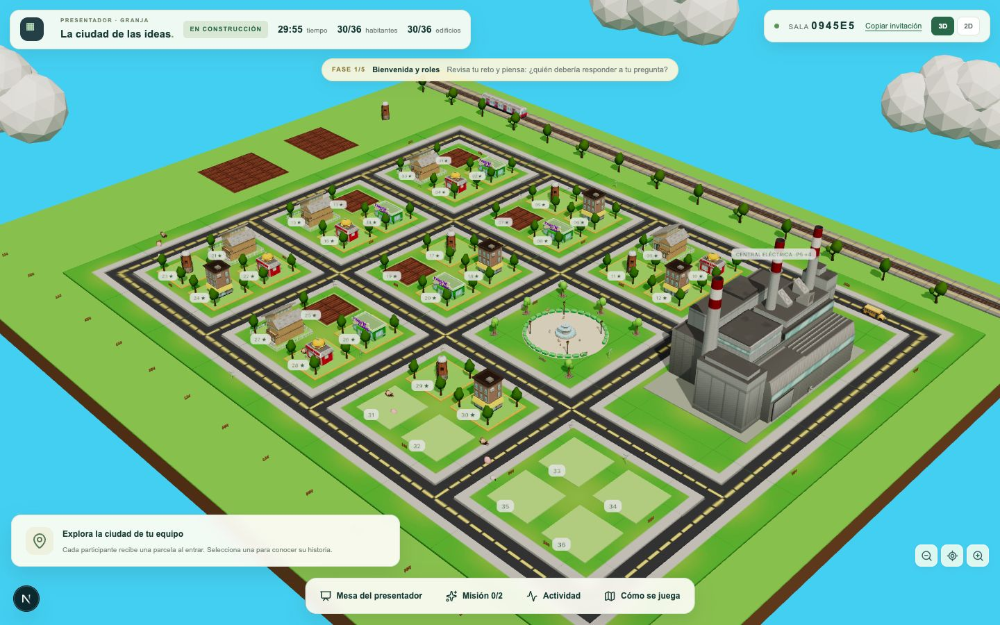
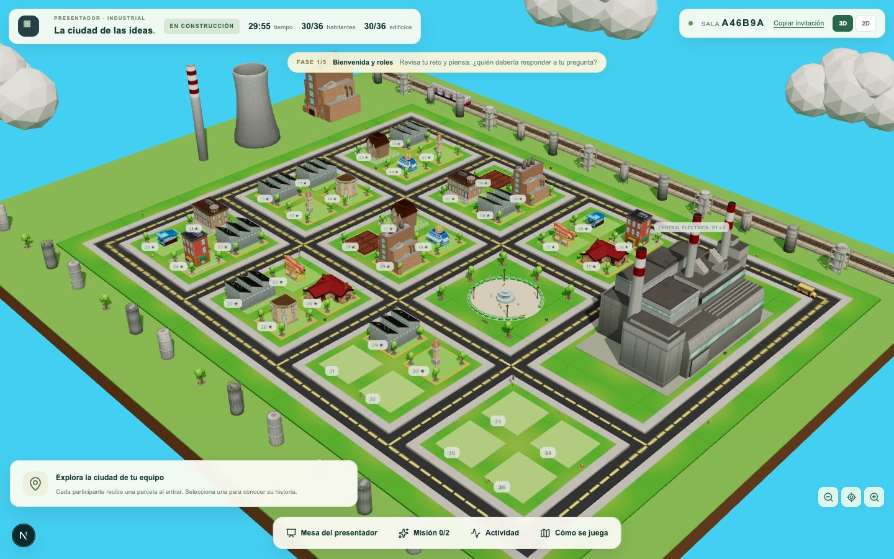

Roles, edificios por parcela y lo que ofrece cada una de las 5 islas.

Nombre base de cada edificio. Algunas islas usan su propia versión (ver páginas siguientes).
| Rol | Reto | Nivel 1 → nivel 2 | Centro | Little Tokyo | Barrio parisino | Granja | Industrial |
|---|---|---|---|---|---|---|---|
| 🏠Urbanista | Diseña viviendas para una ciudad de 36 habitantes. | Viviendas → Bloque de apartamentos | ● | ● | ● | ● | ● |
| ⚡Ingeniero | Diseña una central de energía que abastezca a 36 habitantes. | Subestación eléctrica → Central eléctrica | ● | ● | · | ● | ● |
| 🌱Ecologista | Diseña un huerto comunitario para una ciudad de 36 habitantes. | Huerto comunitario → Granja ecológica | ● | · | ● | ● | ● |
| ☕Barista | Diseña una cafetería de barrio para 36 habitantes. | Cafetería → Bistró | ● | ● | ● | · | · |
| 🍔Cocinero | Diseña un restaurante para alimentar a 36 habitantes. | Puesto de comida → Restaurante | ● | ● | ● | ● | ● |
| 🐾Veterinaria | Diseña una clínica de mascotas para las familias de 36 habitantes. | Clínica de mascotas → Centro veterinario | ● | · | ● | ● | · |
| 🚇Movilidad | Diseña el transporte público para 36 habitantes. | Estación de metro → Estación central | ● | ● | · | · | ● |
| 🛎️Hotelera | Diseña un alojamiento para visitantes de una ciudad de 36 habitantes. | Pensión → Hotel | ● | ● | ● | · | · |
| 🛒Comerciante | Diseña un mercado de barrio para una ciudad de 36 habitantes. | Frutería → Mercado | ● | · | ● | ● | · |
| 💈Peluquera | Diseña una peluquería para los 36 habitantes de la ciudad. | Barbería → Salón de belleza | ● | · | ● | · | · |
| 💼Empresaria | Diseña un espacio de oficinas compartidas para 36 habitantes. | Oficina → Torre de oficinas | ● | ● | · | · | ● |
| 🏭Fabricante | Diseña un taller que fabrique lo que necesitan 36 habitantes. | Taller → Fábrica | ● | · | · | · | ● |
| Roles disponibles | 12 | 7 | 8 | 6 | 7 | ||
Todos los oficios en una ciudad moderna. 12 roles.
| Rol | Nivel 1 | Nivel 2 | |
|---|---|---|---|
| 🏠Urbanista | Viviendas | → | Bloque de apartamentos |
| ⚡Ingeniero | Subestación eléctrica | → | Central eléctricaEl nivel 2 se levanta a tamaño real en la manzana reservada; en la parcela queda el nivel 1 con borde dorado. |
| 🌱Ecologista | Huerto comunitario | → | Granja ecológica |
| ☕Barista | Cafetería | → | Bistró |
| 🍔Cocinero | Puesto de comida | → | Restaurante |
| 🐾Veterinaria | Clínica de mascotas | → | Centro veterinario |
| 🚇Movilidad | Estación de metro | → | Estación central |
| 🛎️Hotelera | Pensión | → | Hotel |
| 🛒Comerciante | Frutería | → | Mercado |
| 💈Peluquera | Barbería | → | Salón de belleza |
| 💼Empresaria | Oficina | → | Torre de oficinas |
| 🏭Fabricante | Taller | → | Fábrica |
Casas tradicionales, faroles y jardines. 7 roles.
| Rol | Nivel 1 | Nivel 2 | |
|---|---|---|---|
| 🏠Urbanista | Casa tradicional | → | Edificio de neón |
| ☕Barista | Cafetería | → | Casa de té |
| 🍔Cocinero | Puesto de comida | → | Yakitori |
| 🛎️Hotelera | Ryokan | → | Hotel |
| 🚇Movilidad | Estación de metro | → | Estación central |
| ⚡Ingeniero | Subestación eléctrica | → | Central eléctricaEl nivel 2 se levanta a tamaño real en la manzana reservada; en la parcela queda el nivel 1 con borde dorado. |
| 💼Empresaria | Oficina | → | Torre de oficinas |

Bistrós, casas altas y mercados. 8 roles.
| Rol | Nivel 1 | Nivel 2 | |
|---|---|---|---|
| 🏠Urbanista | Casa parisina | → | Edificio de balcones |
| ☕Barista | Cafetería | → | Bistró |
| 🍔Cocinero | Crepería | → | Restaurante |
| 🛎️Hotelera | Pensión | → | Hotel |
| 🐾Veterinaria | Clínica de mascotas | → | Centro veterinario |
| 🌱Ecologista | Huerto comunitario | → | Granja ecológica |
| 💈Peluquera | Barbería | → | Salón de belleza |
| 🛒Comerciante | Frutería | → | Mercado |

Huertos, animales y vida rural. 6 roles.
| Rol | Nivel 1 | Nivel 2 | |
|---|---|---|---|
| 🌱Ecologista | Huerto comunitario | → | Granja ecológica |
| 🐾Veterinaria | Clínica de mascotas | → | Centro veterinario |
| 🏠Urbanista | Casa de campo | → | Casa grande de campo |
| 🍔Cocinero | Pollería | → | Restaurante |
| ⚡Ingeniero | Silo de biogás | → | Central eléctricaEl nivel 2 se levanta a tamaño real en la manzana reservada; en la parcela queda el nivel 1 con borde dorado. |
| 🛒Comerciante | Frutería | → | Mercado |

Fábricas, energía y transporte. 7 roles.
| Rol | Nivel 1 | Nivel 2 | |
|---|---|---|---|
| ⚡Ingeniero | Subestación eléctrica | → | Central eléctricaEl nivel 2 se levanta a tamaño real en la manzana reservada; en la parcela queda el nivel 1 con borde dorado. |
| 🚇Movilidad | Estación de metro | → | Estación central |
| 🏠Urbanista | Viviendas | → | Bloque de apartamentos |
| 🍔Cocinero | Puesto de comida | → | Comedor |
| 🌱Ecologista | Huerto comunitario | → | Granja ecológica |
| 🏭Fabricante | Taller | → | Fábrica |
| 💼Empresaria | Oficina | → | Torre de oficinas |
